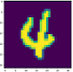
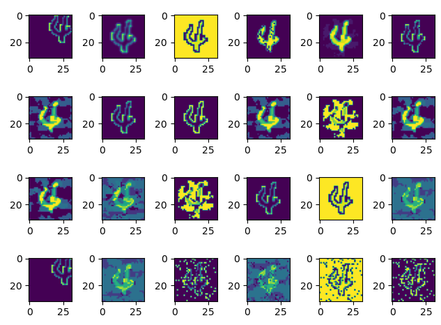

使用fuzz testing模块测试模型安全性¶
Linux Ascend GPU CPU 模型评测 企业 高级

概述¶
传统软件的决策逻辑由代码逻辑决定，传统软件通过代码行覆盖率来判断当前测试是否充分，理想情况下覆盖率越高，代码测试越充分。然而，对于深度神经网络而言，程序的决策逻辑由训练数据、网络模型结构和参数通过某种黑盒机制决定，代码行覆盖率已不足以评估测试的充分性。需要根据深度网络的特点选择更为适合的测试评价准则，指导神经网络进行更为充分的测试，发现更多的边缘错误用例，从而确保模型的通用性、鲁棒性。
MindArmour的fuzz_testing模块以神经元覆盖率作为测试评价准则。神经元覆盖率，是指通过一组输入观察到的、激活的神经元数量和神经元输出值的范围。我们通过神经元覆盖率来指导输入变异，让输入能够激活更多的神经元，神经元值的分布范围更广，从而探索不同类型的模型输出结果、错误行为。
这里以LeNet模型，MNIST数据集为例，说明如何使用Fuzzer。
本例面向CPU、GPU、Ascend 910 AI处理器，你可以在这里下载完整的样例代码：https://gitee.com/mindspore/mindarmour/blob/r1.2/examples/ai_fuzzer/lenet5_mnist_fuzzing.py
实现阶段¶
导入需要的库文件¶
下列是我们需要的公共模块、MindSpore相关模块和fuzz_testing特性模块，以及配置日志标签和日志等级。
import numpy as np
from mindspore import Model
from mindspore import context
from mindspore import load_checkpoint, load_param_into_net
from mindarmour.fuzz_testing import Fuzzer
from mindarmour.fuzz_testing import ModelCoverageMetrics
from mindarmour.utils.logger import LogUtil
from examples.common.dataset.data_processing import generate_mnist_dataset
from examples.common.networks.lenet5.lenet5_net import LeNet5
LOGGER = LogUtil.get_instance()
TAG = 'Fuzz_testing'
LOGGER.set_level('INFO')
参数配置¶
配置必要的信息，包括环境信息、执行的模式。
context.set_context(mode=context.GRAPH_MODE, device_target="Ascend")
详细的接口配置信息，请参见context.set_context接口说明。
运用Fuzz Testing¶
建立LeNet模型，加载MNIST数据集，操作同模型安全
... # Lenet model model = Model(net) # get training data mnist_path = "../common/dataset/MNIST/" batch_size = 32 ds = generate_mnist_dataset(os.path.join(mnist_path, "train"), batch_size, sparse=False) train_images = [] for data in ds.create_tuple_iterator(): images = data[0].asnumpy().astype(np.float32) train_images.append(images) train_images = np.concatenate(train_images, axis=0) # get test data batch_size = 32 ds = generate_mnist_dataset(os.path.join(mnist_path, "test"), batch_size, sparse=False) test_images = [] test_labels = [] for data in ds.create_tuple_iterator(): images = data[0].asnumpy().astype(np.float32) labels = data[1].asnumpy() test_images.append(images) test_labels.append(labels) test_images = np.concatenate(test_images, axis=0) test_labels = np.concatenate(test_labels, axis=0)
Fuzzer参数配置。
设置数据变异方法及参数。支持同时配置多种方法，目前支持的数据变异方法包含三类：
图像仿射变换方法：Translate、Scale、Shear、Rotate。
基于图像像素值变化的方法： Contrast、Brightness、Blur、Noise。
基于对抗攻击的白盒、黑盒对抗样本生成方法：FGSM、PGD、MDIIM。
数据变异方法中一定要包含基于图像像素值变化的方法。
前两种类型的图像变化方法，支持用户自定义配置参数，也支持算法随机选择参数。用户自定义参数配置范围请参考:https://gitee.com/mindspore/mindarmour/blob/r1.2/mindarmour/fuzz_testing/image_transform.py 中对应的类方法。算法随机选择参数，则
params设置为'auto_param': [True]，参数将在推荐范围内随机生成。基于对抗攻击方法的参数配置请参考对应的攻击方法类。
下面是变异方法及其参数配置的一个例子：
mutate_config = [{'method': 'Blur', 'params': {'radius': [0.1, 0.2, 0.3], 'auto_param': [True, False]}}, {'method': 'Contrast', 'params': {'auto_param': [True]}}, {'method': 'Translate', 'params': {'auto_param': [True]}}, {'method': 'Brightness', 'params': {'auto_param': [True]}}, {'method': 'Noise', 'params': {'auto_param': [True]}}, {'method': 'Scale', 'params': {'auto_param': [True]}}, {'method': 'Shear', 'params': {'auto_param': [True]}}, {'method': 'FGSM', 'params': {'eps': [0.3, 0.2, 0.4], 'alpha': [0.1]}} ]
设置评价指标，目前支持5种评价指标，包括:
通用评价指标：accuracy。
神经元覆盖率指标：kmnc， nbc，snac。
对抗攻击评价指标：attack_success_rate。 也可以设置为‘auto’，默认使用所有评价指标。
eval_metrics =['accuracy', 'kmnc', 'attack_success_rate']
初始化种子队列，种子队列中的每个种子，包含2个值：原始图片、图片标签。这里取100个样本作为初始种子队列。
# make initial seeds initial_seeds = [] for img, label in zip(test_images, test_labels): initial_seeds.append([img, label]) initial_seeds = initial_seeds[:100]
测试Fuzz测试前的神经元覆盖率。
segmented_num = 1000 neuron_num = 10 model_coverage_test = ModelCoverageMetrics(model, neuron_num, segmented_num, train_images) model_coverage_test.calculate_coverage(np.array(test_images[:100]).astype(np.float32)) LOGGER.info(TAG, 'KMNC of this test is : %s', model_coverage_test.get_kmnc())
结果：
KMNC of this test is : 0.0851
Fuzz测试。
eval_metrics = 'auto' model_fuzz_test = Fuzzer(model, train_images, neuron_num, segmented_num) _, _, _, _, metrics = model_fuzz_test.fuzzing(mutate_config, initial_seeds, eval_metrics=eval_metrics)
实验结果。
fuzzing的返回结果中包含了5个数据：fuzz生成的样本fuzz_samples、生成样本的真实标签true_labels、被测模型对于生成样本的预测值fuzz_preds、 生成样本使用的变异方法fuzz_strategies、fuzz testing的评估报告metrics_report。用户可使用这些返回结果进一步的分析模型的鲁棒性。这里只展开metrics_report，查看fuzz testing后的各个评估指标。
if metrics: for key in metrics: LOGGER.info(TAG, key + ': %s', metrics[key])
Fuzz测试后结果如下：
Accuracy: 0.7929 Attack_success_rate: 0.3939 Neural_coverage_KMNC: 0.4797
Fuzz测试前种子的KMNC神经元覆盖率为8.5%，Fuzz后，KMNC神经元覆盖率为47.97%，神经元覆盖率提升，样本的多样性提升。Fuzz后，模型对于Fuzz生成样本的准确率为79.29%，使用了对抗攻击方法的样本，攻击成功率为39.39%。由于初始化种子、变异方法和相应的参数均为随机选择的，结果有一定的浮动是正常的。
原始图片：

Fuzz生成的变异图片：
